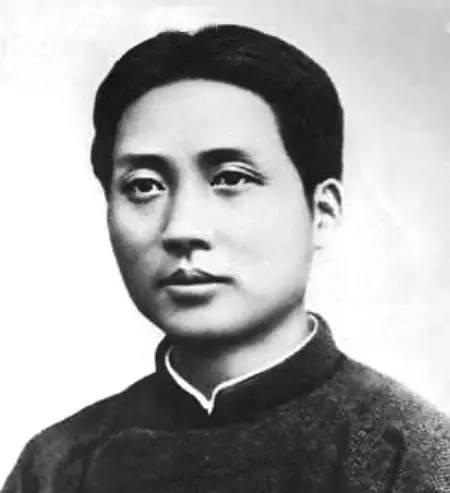
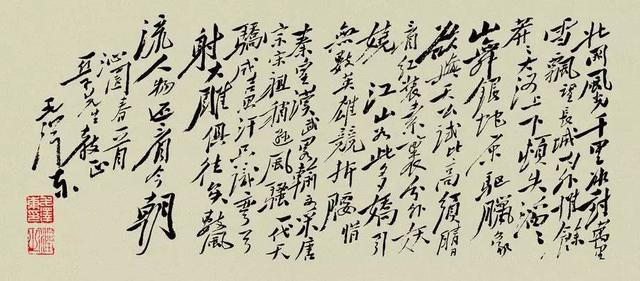

诗人毛泽东的山水情怀
“仁者乐山，智者乐水”，这是中国人耳熟能详的一句话。《论语》云：“智者乐水，仁者乐山。智者动，仁者静。智者乐，仁者寿。”诗人毛泽东一生之中既乐山又乐水。他既是仁者，又是智者，具有强烈而深沉的山水情怀。
毛泽东是一位乐山的“仁者”。他出生于山区，从小就熟悉山，迷恋山，赞美山，山几乎浓缩了毛泽东一生的足迹。“踏遍青山人未老”的毛泽东有多首咏山之作，从“山舞银蛇，原驰蜡象”到“会昌城外高峰，颠连直接东溟”；从“今日向何方，直指武夷山下”到“五岭逶迤腾细浪，乌蒙磅礴走泥丸”；从昆仑山“横空出世”到五云山“远接群峰近拂堤”，再到“龟蛇锁大江”。春山是“云开衡岳积阴止，天马凤凰春树里”；夏山是“雨后复斜阳, 关山阵阵苍”；秋山是“看万山红遍, 层林尽染”；冬山为“山舞银蛇, 原驰蜡象”。山的深沉, 山的坚韧, 山的博大, 与他的诗词浑然一体。
寥廓，神情飞扬。“惊回首，离天三尺三”“五岭逶迤腾细浪，乌蒙磅礴走泥丸”，山是他傲视万物、战天斗地的征服对象。“安得倚天抽宝剑，把汝裁为三截”“截断巫山云雨，高峡出平湖”，山是他重整河山、造福桑梓的改造对象。“刺破青天锷未残。天欲堕，赖以拄其间”“欲与天公试比高”，山也是他钢铁意志、英雄气概的人格象征。